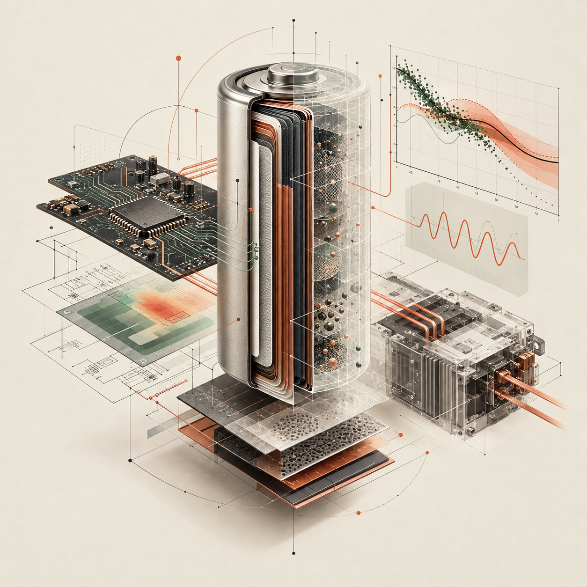

PATENT / US12306261B1
Battery health without extra hardware
Battery health monitoring system

Use the power converter already present in a deployed energy system to excite the battery with a measurement signal, then use the battery’s response to derive health information. The practical idea is to make health diagnostics available in the field without requiring a dedicated impedance-measurement chip or major hardware redesign.
Why it matters
The value is in using existing system capability and real measurements to make battery-health insight more practical for deployed energy storage.
At a glance
Technology area: Field diagnostics · Power electronics · Battery health.
This is an executive-level summary, not legal advice or a substitute for the patent claims. See the published record for the authoritative description, inventors and legal status.
Read patent record ↗